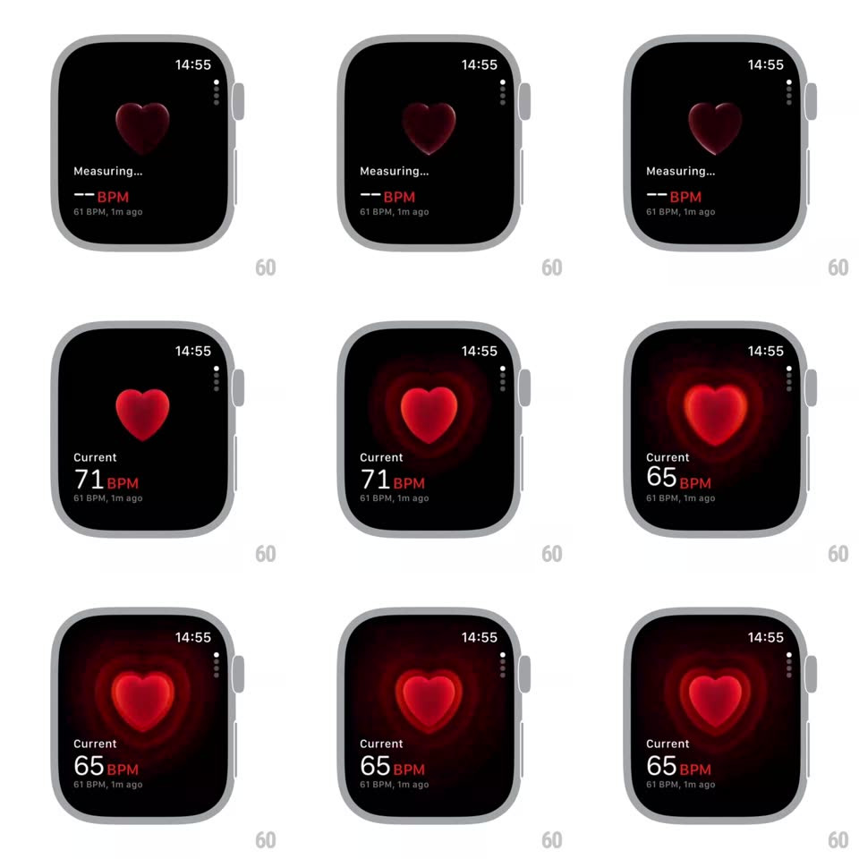

Media
Frame-by-frame

Rebuild this interaction 1:1: the Apple Watch Heart Rate measuring state - a dark red heart beats in the center, then flushes bright red as concentric heart-shaped waves pulse outward from it while the state switches from "Measuring... -- BPM" to "Current 71 BPM" with a live-updating value.

Rebuild this interaction 1:1: the Apple Watch Heart Rate measuring state - a dark red heart beats in the center, then flushes bright red as concentric heart-shaped waves pulse outward from it while the state switches from "Measuring... -- BPM" to "Current 71 BPM" with a live-updating value.
## Integration
Integration: stack-agnostic spec - springs given as stiffness/damping, timed motions as duration + curve; map every value to your framework and animation library of choice.
## Scene
Apple Watch Heart Rate app: time top-right, faint tick column right edge, centered heart, status text below ("Measuring..." -> "Current"), BPM value with the last reading underneath ("61 BPM, 1m ago").
## Motion spec
Pattern: heartbeat-synced pulse waves.
- Measuring: the heart is dark red and beats gently (scale 1 -> 1.08 -> 1, double-thump lub-dub per cycle, ~1s period); "-- BPM" shows below.
- Lock-on: the heart flushes bright red (color tween 300ms) as the label switches to "Current" and the BPM value fades in.
- Each beat emits a heart-shaped (not circular) wave that expands from the heart's edge to beyond the screen (scale 1 -> 3, fade to 0, ~1.2s, ease-out); waves spawn per beat, layering 2-3 deep.
- BPM value updates with readings (crossfade 200ms); the wave rate follows the measured rate.
## Calibration
- The waves are heart-shaped outlines tinted red, blurred slightly at large scale - they read as ripples of the heart itself.
- The lub-dub is asymmetric: first thump stronger (1.08), second softer (1.04).
## Reduced motion
Heart glows steady; BPM fades in; no expanding waves.
## Don't miss
- The state change (dark/measuring -> bright/current) is the core moment - tie it to the first reading, not a timer.
- The previous-reading line ("61 BPM, 1m ago") never animates.